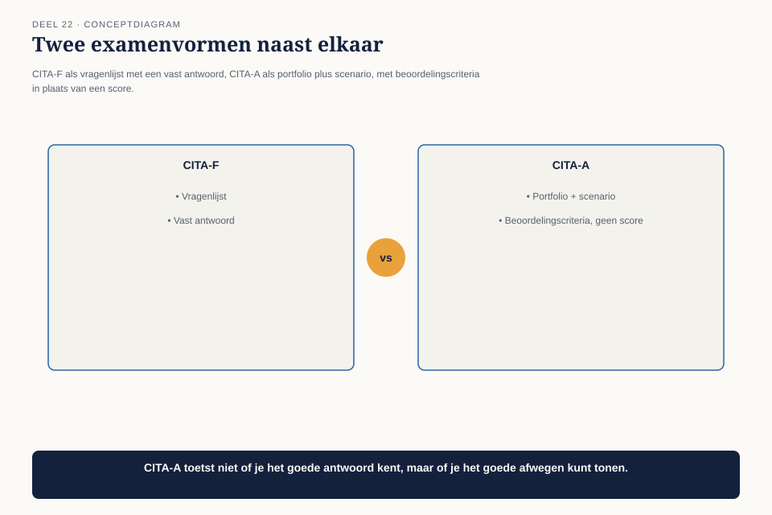
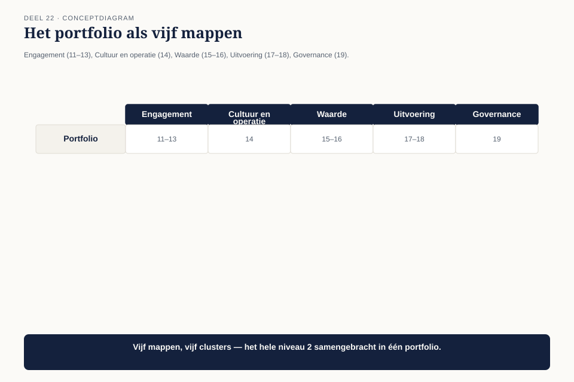
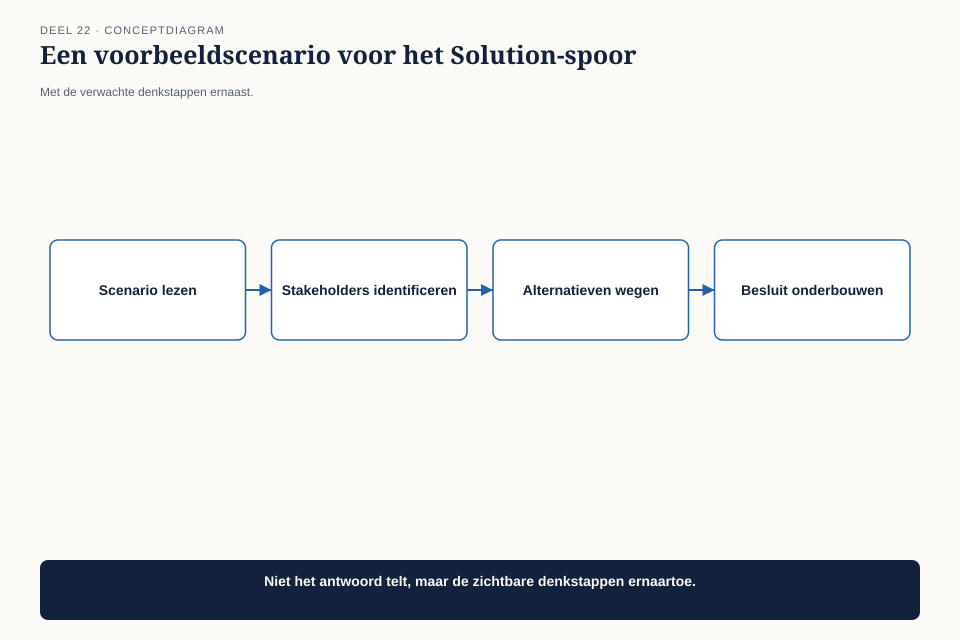
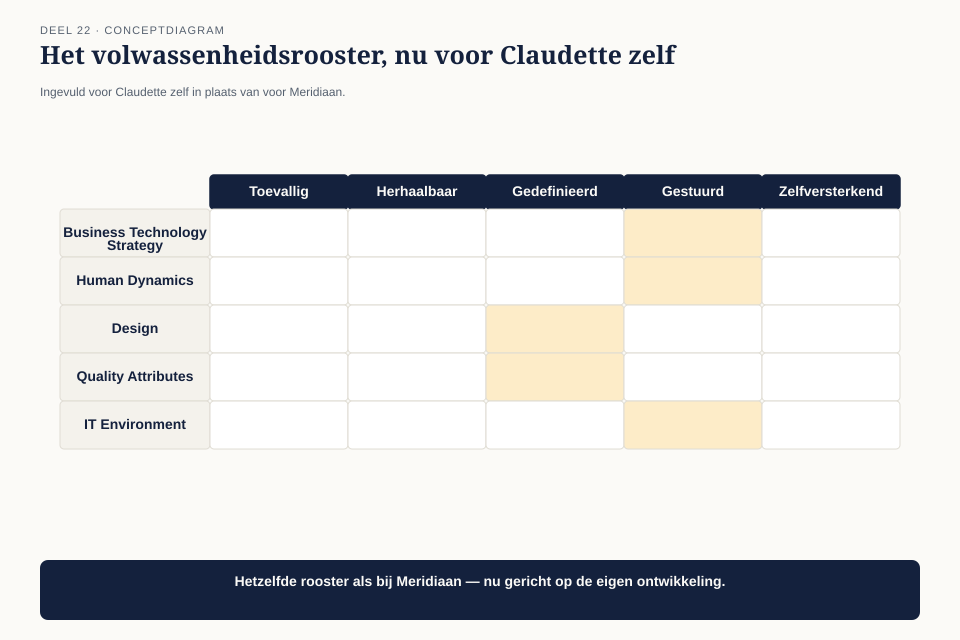

Deel 22 — Examentraining CITA-A en portfoliobeoordeling
Niveau 2 — Engagement, waarde en specialisatie | Deelnemersreader BTABoK-cursus, Ductus
22.1 Waar dit deel over gaat
Dit is de afsluiting van niveau 2, en de vorm verschilt bewust van deel 10. Waar CITA-F een schriftelijk kennisexamen is, is CITA-A opgebouwd rond een portfolio van bewijs uit de praktijk, aangevuld met scenario-oefeningen in het gekozen specialisatiespoor. Je laat niet zien wat je weet, maar wat je hebt toegepast en hoe je oordeelt onder realistische omstandigheden.
Aan het eind van dit deel kun je:
- een compleet CITA-A-portfolio samenstellen uit het werk dat je in niveau 2 hebt gedaan;
- scenario-oefeningen in je gekozen specialisatie afhandelen met de instrumenten die je hebt geleerd;
- je eigen ontwikkeling als architect beoordelen aan de hand van het volwassenheidsrooster uit deel 20, nu toegepast op jezelf in plaats van op een organisatie.
22.2 Wat CITA-A anders maakt dan CITA-F
CITA-F, aan het eind van niveau 1, toetste kennis van de vijf pijlers via vragen met een vast goed antwoord. CITA-A toetst iets anders: of je die kennis daadwerkelijk hebt toegepast, en of je oordeel standhoudt in een situatie die niet identiek is aan wat je eerder hebt gezien.

| CITA-F | CITA-A | |
|---|---|---|
| Vorm | 75 vragen, meerkeuze/waar-onwaar | portfolio + scenario-oefeningen |
| Wat het toetst | kennis van de vijf pijlers | toegepast oordeel in een specialisatie |
| Tijdshorizon | één moment, 2,5 uur | opgebouwd uit werk over meerdere jaren |
| Slagen | 70% score | portfolio + scenario’s voldoen aan de criteria van het gekozen spoor |
22.3 Het portfolio: wat erin hoort
Het portfolio is geen verzameling van alles wat je ooit hebt gemaakt, maar een gerichte selectie — dezelfde discipline als het minimum viable architecture-dossier uit deel 10, nu toegepast op een heel niveau in plaats van op één capstone.

| Portfoliomap | Gevuld met | Uit welke delen |
|---|---|---|
| Engagement | opdrachtblad, klantreiskaart, capability-fit-analyses | deel 11-13 |
| Cultuur en operatie | metriektoets-resultaten, snelheidsanalyse | deel 14 |
| Waarde | objectives, waardestroomanalyse, batenrealisatieplan | deel 15-16 |
| Uitvoering | patroonkaarten, deliverable-standaard | deel 17-18 |
| Governance | roadmapkaart, experimentkaart, licht charter | deel 19 |
Elk item in het portfolio moet, net als in het minimum viable architecture-dossier, een korte toelichting hebben: wat het laat zien, en waarom het relevant is voor het gekozen specialisatiespoor. Een klantreiskaart die in het Solution-portfolio staat, krijgt een andere toelichting dan wanneer diezelfde kaart in een Information-portfolio zou staan — de nadruk verschuift naar wat voor het gekozen spoor het meest zegt.
22.4 Scenario-oefeningen: oordeel onder nieuwe omstandigheden
Naast het portfolio krijgt elke deelnemer twee tot drie scenario-oefeningen in het eigen spoor: een situatie die niet letterlijk is behandeld in de cursus, maar wel met de geleerde instrumenten aan te pakken is.

Voorbeeldscenario (Solution-spoor): “Een nieuw team sluit zich over drie maanden aan bij een bestaand programma, met een eigen dienst die op twee bestaande systemen moet aansluiten. Er is geen bestaand koppelvlakpatroon voor deze combinatie. Hoe pak je dit aan?”
Verwachte denkstappen, niet een vast antwoord:
- Is er een vergelijkbaar patroon in het gedeelde besluitenlogboek (deel 17)? Eerst zoeken, dan pas ontwerpen.
- Wat is de scope van deze aansluiting — een scope- en contextdiagram (deel 6) voordat er wordt ontworpen.
- Wie zijn de stakeholders van beide bestaande systemen, en is de stakeholderkaart (deel 4, deel 17) nog actueel voor hen?
- Is dit binnen kaders (het nieuwe team past een bestaand patroon toe) of buiten kaders (er ontstaat een nieuw patroon dat het architectuurgremium moet zien, deel 19)?
Het scenario heeft geen enkel “juist” antwoord — de beoordeling let op of de kandidaat systematisch de juiste vragen stelt, in een zinnige volgorde, met de instrumenten die bij het gekozen spoor horen.
22.5 Zelfbeoordeling: het volwassenheidsrooster toegepast op jezelf
De derde competentie van dit deel is een persoonlijke toepassing van het instrument uit deel 20. In plaats van een organisatie te beoordelen, beoordeel je je eigen ontwikkeling als architect langs dezelfde vijf dimensies en vijf niveaus.

Claudette scoort zichzelf op Design en Business Technology Strategy op niveau 4 (gemeten — ze gebruikt de instrumenten consequent en volgt het effect), op Human Dynamics op niveau 4 (de stakeholderkaart is inmiddels een automatisme), en op Quality Attributes op niveau 3 (ze gebruikt het kwaliteitsprofiel, maar niet altijd systematisch bij elk traject). Dit is geen examenonderdeel met een minimumscore, maar een eerlijke zelfreflectie die ze meeneemt in haar portfolio als bewijs van zelfkennis — iets dat CITA-A expliciet waardeert boven een perfecte zelfpresentatie.
22.6 De afronding van niveau 2
Aan het eind van deze dag heeft elke deelnemer een compleet portfolio, twee tot drie doorgewerkte scenario’s, en een eerlijke zelfbeoordeling. Dat is niet hetzelfde als een geslaagd CITA-A-examen — de daadwerkelijke beoordeling gebeurt extern, via Iasa — maar het is de complete, geoefende voorbereiding daarop.
Claudette’s portfolio, teruggekeken over de twaalf delen van niveau 2, vertelt een consistent verhaal: van een architect die met “sluit je gewoon aan” een programma inrolde zonder opdrachtblad, naar een architect die een compleet, aantoonbaar instrumentarium heeft opgebouwd — gedragen door cijfers, niet door beweringen.
22.7 Kernbegrippen
| Begrip | Betekenis in deze cursus |
|---|---|
| CITA-A-portfolio | een gerichte selectie van bewijs uit de praktijk, per portfoliomap gekoppeld aan een cluster van niveau-2-delen |
| Scenario-oefening | een nieuwe situatie, geen vast antwoord — beoordeeld op systematisch, herkenbaar toegepast oordeel |
| Zelfbeoordeling met het volwassenheidsrooster | het instrument uit deel 20, toegepast op de eigen ontwikkeling in plaats van op een organisatie |
Niveau 2 is hiermee afgesloten. Niveau 3 begint met deel 23 — een nieuwe casusfase waarin Claudette, inmiddels gecertificeerd, wordt gevraagd een complete architectuurpraktijk op te bouwen voor de grootste transformatie die Meridiaan ooit heeft doorgemaakt: de overgang naar het nieuwe pensioenstelsel.